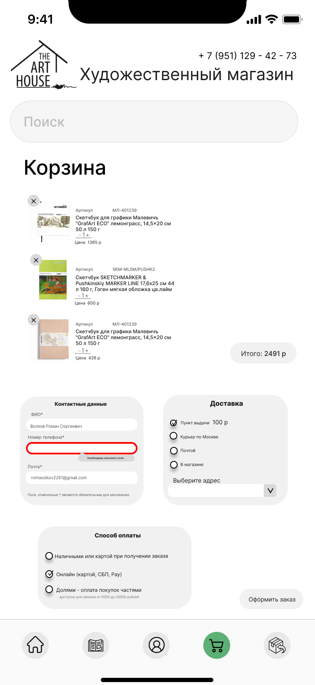
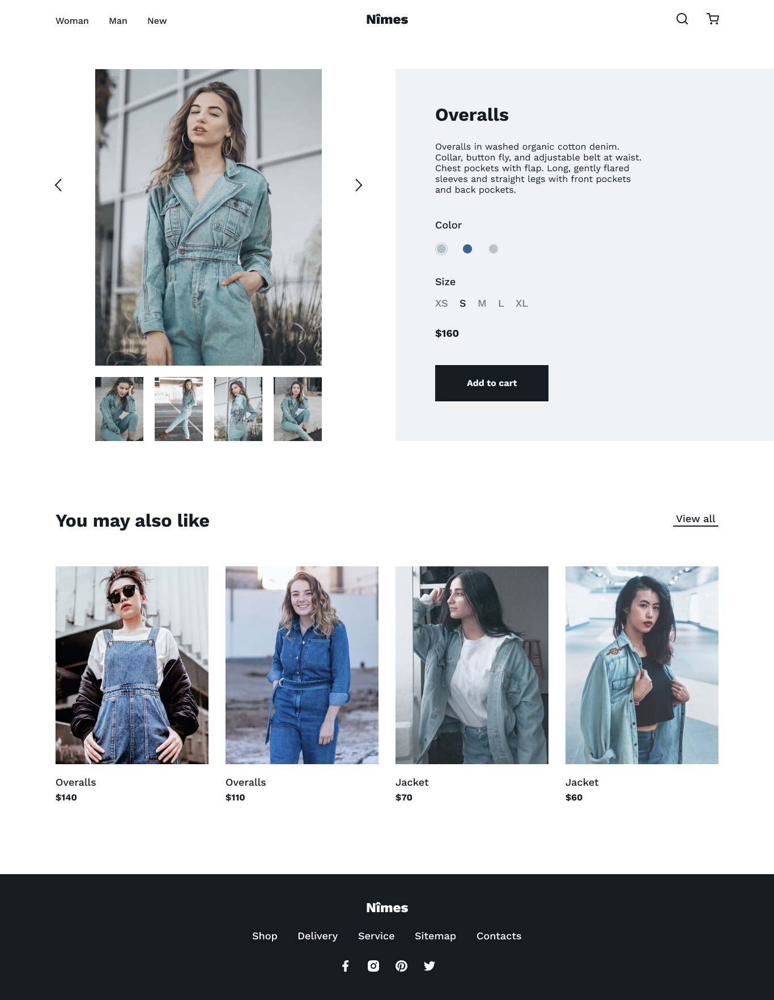
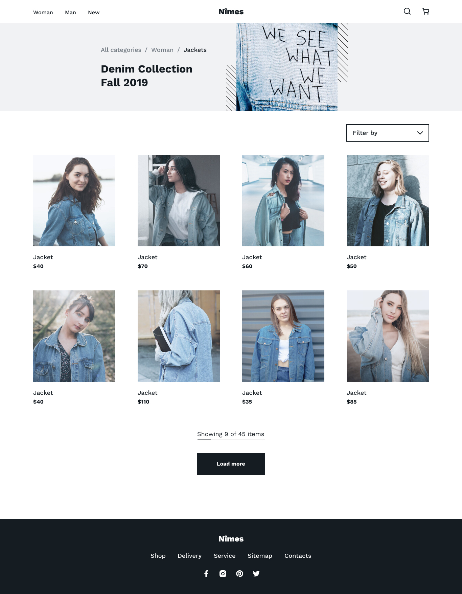
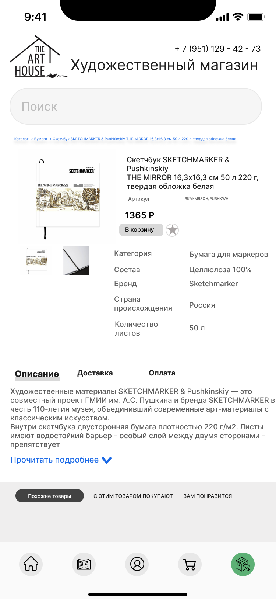

UI/UX · MOBILE
ART HOUSE
Мобильный e-commerce: каталог, карточка товара, корзина и checkout.
UI/UX · DIGITAL DESIGN · 2026
Проектирую web и mobile интерфейсы, интерактивные продукты и визуальные системы. Соединяю дизайн, прототипирование и техническое понимание продукта — от структуры и user flow до адаптива и финального UI.
SELECTED WORK
Интерфейсы, визуальные системы, интерактивные продукты и эксперименты с digital‑медиа.

Мобильный e-commerce: каталог, карточка товара, корзина и checkout.



Структура, визуальная иерархия, компоненты и адаптив.







MOTION & CREATIVE TECH
Работаю с Adobe Animate, After Effects, Premiere Pro, MadMapper, p5.js, Unity/Vuforia и генеративными экспериментами. Это помогает мне проектировать digital‑опыт шире одного статичного экрана.
ABOUT ME
Я Елена Каширова, UI/UX & Digital Designer из Москвы. Учусь на 4 курсе Московского Политеха и развиваюсь в проектировании web и mobile продуктов.
Мне важно не просто сделать красивый экран, а собрать понятную систему: продумать информационную архитектуру, пользовательский путь, состояния, адаптив, компоненты и визуальный язык.
Работаю в Figma, Photoshop, Illustrator, InDesign, After Effects, Premiere Pro и Adobe Animate. Знакома с HTML, CSS, JavaScript, C++, C#, Java, PHP и Unity. Проходила международную программу Innovation Entrepreneurship в Asian Institute of Technology и прошла конкурсный отбор на IT‑стажировку Московского транспорта.
Рассматриваю Junior UI/UX / Digital Designer позиции и стажировки.